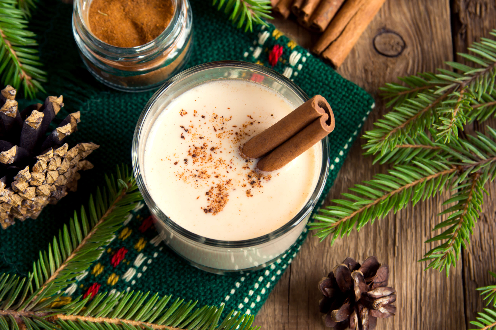

Coquito

Nope, it's not eggnog!
In Puerto Rico, it wouldn't be the holidays without sipping a glass of
coquito. This traditional drink is the staple of Christmas in Puerto Rico.
Some may describe it as eggnog but in fact, their are no eggs used to make
coquito. The name means "small coconut" and you'll come to know why.
Ingredients
- 1 can of evaporated milk
- 1 can of condensed milk
-
1 can of coconut milk (Coco Lopez is prefered amongst Puerto Ricans
- 1/2 cup of Puerto Rican rum (Don Q or Bacardi)
- 1/2 teaspoon of vanilla
- 1 teaspoon of ground cinnamon
- Cinnamon Sticks
Steps
-
In a blender or large bowl, add evaporated milk, cream of coconut,
sweetened condensed milk, rum, vanilla extract, and cinnamon.
- Stir or mix ingredients until well blended
- Pour mixture into a glass bottle with two sticks of cinnamon
- Chill in the refrigerator until it's cold
- Once cold, pour into small serving glasses
- Optional: Garnish with a cinnamon stick and some cinnamon powder